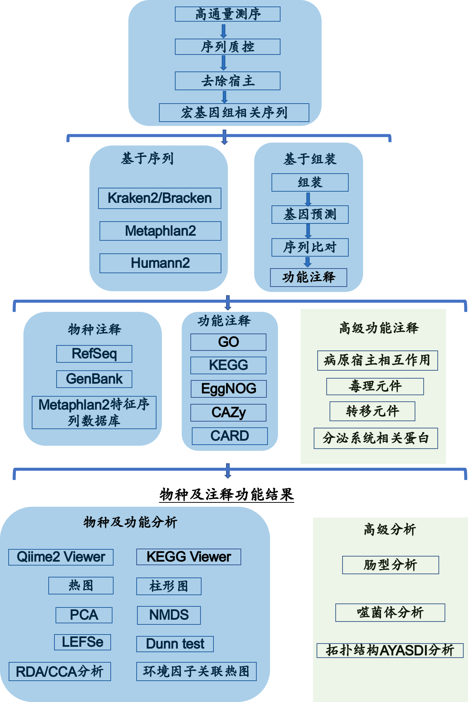

温馨提示：请使用火狐或者Chrome的网页浏览器来查看报告
宏基因组_样本_结题报告
一 概述
微生物世界是分子多样性最大的天然资源库，基于菌株水平的传统分离培养技术为人们认识微生物多样性提供了可能，但是据估计自然界中超过99%的微生物不能通过传统的分离培养技术获得其纯培养，从而导致环境微生物中的多样性基因资源难以被发现。许多重要的微生物我们还不能识别，随着微生物活性产物的广泛研究和深入开发利用，从环境微生物中筛选到新活性物质的几率将逐步下降。而如何开拓利用环境微生物新资源是微生物研究的重要课题。为此研究者们开发了多种以特定环境微生物为研究对象的高通量测序方法。[1-3]
宏基因组学(Metagenomics)，是一种直接对微生物群体中包含的全部基因组信息进行研究的手段。宏基因组学绕过对微生物个体进行分离培养，应用基因组学技术对自然环境中的微生物群落进行研究的一门学科。它规避了对样品中的微生物进行分离培养，提供了一种对不可分离培养的微生物进行研究的途径，更真实的反应样本中微生物组成、互作情况，同时在分子水平对其代谢通路、基因功能进行研究。近年来，随着测序技术和信息技术的快速发展，利用新一代测序技术(Next Generation Sequencing)研究 Metagenomics，能快速准确的得到大量微生物基因数据和丰富的微生物研究信息，从而成为研究微生物多样性和群落特征的重要手段。细菌基因组相对较小，通常仅有一条环状DNA和质粒，通过高通量测序，可以了解其全部遗传信息。这也已经成为微生物研究的重要手段之一，为细菌的遗传进化、疾病预防与治疗、疫苗与抗生素的开发等提供重要的信息。如致力于研究微生物与人类疾病健康关系的人体微生物组计划(HMP, Human Microbiome Project, http://www.hmpdacc.org/ )，研究全球微生物组成和分布的全球微生物组计划(EMP, Earth Microbiome Project, http://www.earthmicrobiome.org/ )都主要利用高通量测序技术进行研究。[4-6]
二 项目流程
2.1 实验流程
图2-1 实验工作流程图
2.2 信息分析流程
分析流程主要步骤(图2-2)：
1) 数据质控：测序得到的原始数据会存在一定比例的低质量数据，为了保证后续信息分析结果的准确可靠，首先要对原始数据进行质控及宿主过滤，得到有效数据。分析中将使用Cutadapt彻底清除原始数据中的Illumina接头序列，再用PrinSEQ去除低质量的序列片段和个别序列。质控前和质控后，会用FastQC来检测质控的合理性和效果。[7，8]
2) 去除宿主：质控处理后的数据通过bowtie2比对到宿主的基因组，没有比对到的序列被保留下来做后续分析。
3）物种注释：使用Kraken2和自建的微生物数据库(从Kraken官网下载各个微生物数据库(细菌，真菌，古菌，病毒)，合并后再加入哥伦比亚大学实验室研究中新发现的一些细菌基因组数据）来鉴别样本中所含有的物种，再用Bracken来对样本中物种的实际相对丰度进行预测。相较于基于组装的物种注释，基于序列的宏基因组物种注释方法更加全面和准确。[9-12]
4) 功能注释：运用megahit软件，将所有样本去宿主基因后的clean reads进行组装（megahit默认组装参数），得到contigs; 运用prodigal软件，预测contigs中的基因序列; 再用cd-hit软件，对得到的基因进行去冗余，得到去冗余基因; 使用salmon软件，对去冗余基因进行定量; 使用eggnog-mapper, diamond软件，对去冗余基因进行各个数据库的注释。统计各个数据库的基因相对丰度表。[19-22]
5) 抗性基因注释：运用diamond软件，将去冗余基因比对到CARD数据库，得到CARD数据库的抗性基因注释信息，根据去冗余基因的丰度信息，统计抗性基因的相对丰度表。[24-25]
6) 基于物种丰度表和功能丰度表，可以进行丰度聚类分析，PCoA和NMDS降维分析（仅物种），样品聚类分析；当有分组信息时，可以进行LEfSe biomarker挖掘分析以及代谢通路比较分析，挖掘样品之间的物种组成和功能组成差异。[22，23]
7) 另外，还可以基于标准分析结果，进行一系列高级信息分析（如 肠型分析，分箱，病原与宿主互作数据库(PHI)注释，分泌蛋白预测，III型分泌系统效应蛋白预测，细菌致病菌毒力因子(VFDB)注释，转移元件分析（MGE）等，更多详细信息请查看微生太宏基因组高级信息分析说明）；同时，结合环境因子、病理指标或特殊表型进行深入关联研究，能够为进一步深入研究和利用样品的物种和功能提供理论依据。[26-28]

图2-2 信息分析流程图
三 测序数据预处理 (1-QCStats目录)
本项目采用Illumina Novaseq平台对测序样本进行双端测序。基于FASTQ格式的测序文件是一种存储序列信息的特定文件，推荐用Notepad++等文本编辑器或者在电脑终端中打开。FASTQ文件每四行对应一条测序Read：第一行以符号“@”起始，对应于序列ID和相应的描述信息；第二行为实际测得的碱基序列；第三行以符号“+”起始；而第四行的字符串则记录了第二行序列中每个碱基所对应的测序质量（详见 https://en.wikipedia.org/wiki/Fastq）。
采用 Illumina测序平台测序获得的原始数据(Raw Data)存在一定比例低质量数据，为了保证后续分析的结果准确可靠，需要对原始的测序数据进行预处理，包括修剪（cutadapt 去除接头序列 ），质控（prinseq 参数： -min_len 50 -min_qual_mean 30 -lc_method entropy -lc_threshold 70 -ns_max_n 20 -trim_left 10），去宿主序列（bowtie2），获取用于后续分析的有效序列。测序数据预处理统计结果见表 3-1。序列质控步骤和参数如下：
1) 去除长度小于50bp的 reads；
2) 去除平均质量分低于30（相当于99.9%的碱基测序正确概率）的 reads；
3) 去除序列复杂度低于70（用entropy的方式计算）的序列；
4) 去除 N 碱基（未知碱基）达到一定数量的 reads（默认设为20bp）；
5) 去除每条序列5'端10bp的碱基；
{{table1}}
表3-1 数据产出质量情况一览表
质控前后，会用FastQC来检测质控的合理性和效果。FastQC结果统计信息可以通过点击此处打开新窗口查看。
四 物种的注释与评估(2-TaxaAundanceAnalysis目录)
4.1 物种组成分析
为了研究样品物种组成及多样性信息，我们用Kraken2对所有样品的全部的有效序列进行注释分类。Kraken2是基于Kraken1后研发的的最新版本（2018）。Kraken系列软件是一种使用精确k-mer匹配的分类系统，可实现高精度和快速分类速度。该分类器将查询序列中的每个k聚体与包含给定k聚体的所有基因组的最低共同祖先（LCA）匹配。 Kraken2在Kraken1的基础上提供了重大改进，达到了数据库构建时间更短，数据库大小更小和分类速度更快的效果。在使用完Kraken对宏基因组测序数据进行分类。我们继续用Bracken对Kraken2得到的分类结果进行分类后贝叶斯重新估算丰度来估算宏基因组样本的物种水平或属级丰度。[29,30]
基于Bracken结果的绝对丰度及注释信息，对每个样品在一共7个分类水平界门纲目科属种(Kingdom,Phylum,Class,Order,Family,Genus,Species)上的序列数目占总序列数的比例进行统计，可以有效的评估样本的物种注释分辨率（注释到属/种的比例越高表示样本的注释效果越好），图4-1展示了每个样本中在各分类水平注释的相对程度:

图 4-1 各个样品在各分类水平上的序列注释程度柱形图
经过分析和统计，{{species_ratio}}
图4-2展示了样本中物种在不同分类水平相对分布情况的柱形图:
图 4-2 各个样本在各分类水平的物种相对分布情况的柱形图（全部物种，点击此处打开新窗口查看）

图 4-2 (补充) 各个样品在门水平上的相对分布情况柱形图（相对丰度前20的物种）
除了通过网页版报告，用户也可以通过本地文件夹查看结果。结果文件夹中包含的.qzv文件是Qiime2的专属可视化文件格式，可以通过网页https://view.qiime2.org/进行交互性查看，也可以直接点开相应的qzv解压缩文件夹通过网页形式直接点开HTML文件“Summary_请点此文件查看.html”查看。网页报告只选取了部分代表性信息用于引导用户阅读，然而本地文件夹的结果目录中包含了大量其他有用的信息，请用户自行查看。
为了研究不同样品间的相似性，还可以通过对样品进行聚类分析从而构建样品的聚类。选取关注的物种（默认选取物种绝对丰度排名前20），根据样品的物种组成，实现样品聚类，以此考察不同样品或者分组间的相似或差异性（此处为门水平分类的热图）;也根据物种丰度在各样本的分布进行聚类，寻找物种或样本的聚集规律。[31-33]

图 4-3 门分类水平的热图聚类结果
4.2 组间物种差异显著性分析
LEfSe寻找每一个分组的特征微生物（默认为LDA>2的微生物）[19]，也就是相对于其他分组，在这个组中丰度较高的微生物（如图4-4。完整的差异性分析结果请见结果部分./2-AundanceAnalysis/2-AbundanceComparison/LEfSe/。

图4-4 LEfSe分析LDA柱形图
ANCOM(Analysis of composition of microbiomes)是另外一种比较微生物组学数据中物种在组间的显著性差异的分析方法。[34]ANCOM分析不依赖于数据的分布假设，并解决了在其他方法中相对丰度分析所带来的限制，从而能够有效降低结果的假阳性。从下面链接中我们可以得知各分类水平的物种在组间表现的差异情况：
点击此处查看物种属水平分类的ANCOM丰度比较结果（点击此处打开新窗口查看）
4.3 样品共有物种分析
在样本中，根据物种是否存在来寻找分组之间的特有或共有的物种，对于分组较少（小于等于5）的实验方案，我们绘制韦恩图（Venn diagram）分析不同样品组之间特有或共有的物种（种水平），用于统计多个样本中所共有和独有的物种数目，可以比较直观地表现样本分组间物种组成相似性及重叠情况（图4-5）。对于分组较多的（大于等于3），我们绘制了花瓣图，花瓣图中，花瓣里是对应分组特有的物种数目，中心是所有分组共有的物种数目。同时也给出了特有和共有的taxa，丰度较高且特有的物种具有重要分析价值，请参见 ./2-TaxaAundanceAnalysis/2-AbundanceComparison/VennAndFlower

图4-5 共有或特有物种韦恩图展示（当分组数目小于等于5时）
4.4 样品多样性指数分析
目前适用于生态学研究的降维分析主要是主成分分析 (PCA，Principal Component Analysis)和无度量多维标定法（NMDS，Non-Metric Multi-Dimensional Scaling）分析。其中，PCA是基于线型模型的一种降维分析，它应用方差分解的方法对多维数据进行降维，从而提取出数据中最主要的元素和结构；PCA 能够提取出最大程度反映样品间差异的两个坐标轴，从而将多维数据的差异反映在二维坐标图上，进而揭示复杂数据背景下的简单规律。而NMDS是非线性模型，其目的是为了克服线性模型的缺点，更好地反映生态学数据的非线性结构，应用NMDS分析，根据样本中包含的物种信息，以点的形式反映在多维空间上，而不同样本间的差异程度则是通过点与点间的距离体现，能够反映样本的组间或组内差异等。 基于不同分类层级的物种丰度表，我们进行了PCA和NMDS分析，如果样品的物种组成越相似，则它们在PCA和NMDS图中的距离则越接近。[37]详细的数值可以查看结果目录./2-TaxaAundanceAnalysis/3-DiversityAnalysis/。
PCA是主坐标分析（PCoA）的一种特殊情况（基于欧式距离的PCoA就是PCA）。本报告利用PCoA分析方法，从多维数据中提取出最主要元素和能够最大程度反映样品间差异的三个坐标轴，从而将多维数据的差异反映在三维坐标图上，进而揭示复杂数据背景下的简单规律。我们基于Bray Curtis距离来进行PCoA分析，并选取贡献率最大的主坐标组合进行作图展示，图中样品的距离越接近，表示样品的物种组成结构越相似（图4-6）。分析结果文件夹分别提供了PCoA的2D和3D图，方便选择使用。[35,36]
图4-6 基于Bray Curtis距离矩阵的的PCoA 3D图（点击此处打开新窗口查看图片可拖动旋转，可调色）
五 功能数据库注释(4-FuctionAnalysis目录)
功能分析基本步骤
1）从去冗余基因出发，运用salmon软件进行去冗余基因的定量，每个样本校正成功比对到去冗余基因的reads总数，得到相对丰度RPM（reads per million）;
2）运用eggnog-mapper软件（基于diamond），将去冗余基因比对到EggNOG数据库（diamond --more-sensitive模式，比对参数为diamond默认参数，e-value<0.001），得到去冗余基因的KEGG，GO，COG注释信息。运用diamond，将去冗余基因比对到CAZy数据库（默认参数，e-value<0.001），得到CAZy的注释信息。
3）根据去冗余基因的丰度表和各个数据库的注释信息，对于每个数据库，将注释到相同基因的去冗余基因丰度加和，筛除比对失败的去冗余基因，得到每个数据库基因的相对丰度表。
4）从各个数据库功能的相对丰度表出发，进行相对丰度柱形图展示，Circos图展示，丰度聚类热图展示，组间功能差异LEfSe分析，组间功能差异pair-wise多重比较DunnTest分析，map图填色，功能与环境因子（或者其它组学数据）的相关性分析。
5.1 KEGG数据库(4-FuctionAnalysis/1-KEGG目录)
KEGG 数据库于 1995 年由 Kanehisa Laboratories 推出 0.1 版，目前发展为一个综合性数据库，其中最核心的为 KEGG PATHWAY 和 KEGG ORTHOLOGY 数据库。在 KEGG ORTHOLOGY 数据库中，将行使相同功能的基因聚在一起，称为 Ortholog Groups (KO entries)，每个 KO 包含多个基因信息，并在一至多个 pathway 中发挥作用。而在 KEGG PATHWAY 数据库中，将生物代谢通路划分为 6 类，分别为：细胞过程（Cellular Processes）、环境信息处理（Environmental Information Processing）、遗传信息处理（Genetic Information Processing）、人类疾病（Human Diseases）、新陈代谢（Metabolism）、生物体系统（Organismal Systems），其中每类又被系统分类为二、三、四层。第二层目前包括有 57个种子 pathway；第三层即为其代谢通路图；第四层为每个代谢通路图的具体注释信息。[40]
5.1.1 功能相对丰度概况
根据数据库的注释结果，绘制了各样品在各个功能层级上的相对丰度统计图（图5-1, 相对丰度前20）。

图5-1 KEGG代谢通路的Level1层级丰度柱形图（点击此处打开新窗口查看更多柱形图)
5.1.2 功能相对丰度差异性分析
LEfSe方法是非参数检验和线性判别分析的结合，适合寻找各分组的biomarkers；LEfSe寻找每一个分组的biomarker 功能（LDA>阈值的功能, biomarker功能在相应分组中丰度较高，在其他分组中丰度较低。为了方便客户选择，我们在结果文件夹中分别提供了阈值为2和4的结果），也就是相对于其他分组，在这个组中丰度显著较高的功能（如图5-2）

图5-2 KEGG的基本代谢通路LEfSe分析LDA柱形图（点击此处打开新窗口查看更多LDA柱形图)
为了方便客户了解不同KEGG功能层级上的组间差异，我们对各个功能层级进行LEfSe分析。用户可以通过点击./4-FuctionAnalysis/1-KEGG/4-SignificanceAnalysis/结果文件夹查看KEGG数据库同源基因（KO基因），KEGG的Level3代谢通路（Pathway）和KEGG功能模块（Module）等层面的功能的LEfSe差异比较结果（LDA柱形图）。
根据KO (KEGG Orthologous groups) LEfSe组间差异比较结果，我们可以进一步给map（通路）图上色，在通路图中标注出检测到的基因，以及各个分组的特征基因（gene biomarkers）（图5-3）。

图5-3 通路中各个分组的biomarkers基因（点击此处打开新窗口查看更多通路图)
另外，您可以打开同一文件夹下的同名网页文件（后缀不同），查看每个通路矩形节点的详细信息，鼠标悬在矩形框上可以看到您样本中检测到对应通路节点的哪些KOs，以及这些KO是哪个分组的特征KO（KO后面括号内的分组，表示这个KO是这个分组的特征KO），点击矩形框可以查看KEGG官网对相应节点KOs的解释。如下嵌入网页所示：
图5-3补充 通路中各个分组的biomarkers基因网页版（点击此处打开新窗口查看更多通路图网页)
利用R语言的dunn.test包，我们对每一个功能的进行分组间两两多重比较，得到分析的表格，可在结果目录4-FuctionAnalysis/1-KEGG/4-SignificanceAnalysis/DunnTest查看分析结果。该分析首先用Kruskal-Wallis算出总的p值，再用Dunn.test核心算法进行多重比较，并用Bofferoni校正错误发现率。
更多更详细的结果请查看结果目录4-FuctionAnalysis/1-KEGG
5.2 EggNOG数据库(4-FuctionAnalysis/2-EggNOG目录)
EggNOG数据库收集了COG（Clusters of Orthologous Groups of proteins，直系同源蛋白簇）,构成每个COG的蛋白都是被假定为来自于一个祖先蛋白，因此是orthologs或者是paralogs。通过把所有完整基因组的编码蛋白一个一个的互相比较确定的。在考虑来自一个给定基因组的蛋白时，这种比较将给出每个其他基因组的一个最相似的蛋白（因此需要用完整的基因组来定义COG），这些基因的每一个都轮番地被考虑。如果在这些蛋白（或子集）之间一个相互的最佳匹配关系被发现，那么那些相互的最佳匹配将形成一个COG。这样，一个COG中的成员将与这个COG中的其他成员比起被比较的基因组中的其他蛋白更相像。
从COG的相对丰度表出发，筛选出最大丰度排名前20的COG，进行聚类和热图（图5-4）展示：

图5-4 各个样品COG聚类热图（相对丰度前20的基因）
更多更详细的结果请查看结果目录4-FuctionAnalysis/2-EggNOG
5.3 GO数据库(4-FuctionAnalysis/3-GO目录)
GO(gene ontology)数据库是基因本体联合会(Gene Onotology Consortium)所建立的数据库，旨在建立一个适用于各种物种的，对基因和蛋白质功能进行限定和描述的，并能随着研究不断深入而更新的语言词汇标准。GO是多种生物本体语言中的一种，GO数据库根据功能将基因分为三大类：分子功能（MF），生物学过程（BP），细胞组分（CC）。
Circos 图可以用于展示每个样本各个基因（丰度前10）的比例，以及每个基因在各个样本中的比例（图5-5）：

图5-5 Gene ontology在各个样本中的分布Circos 图
更多更详细的结果请查看结果目录4-FuctionAnalysis/3-GO
5.4 CAZy数据库（碳水化合物酶活性）(4-FuctionAnalysis/4-CAZy)目录
碳水化合物活性酶数据库(CAZy)是关于能够合成或者分解复杂碳水化合物和糖复合物的酶类的一个数据库资源,其基于蛋白质结构域中的氨基酸序列相似性,将碳水化合物活性酶类归入不同蛋白质家族。CAZy数据库提供了酶分子序列的家族信息，物种来源，基因序列，蛋白序列，三维结构，EC分类，相关数据库链接，建立此数据库是为了将酶分子的序列、结构、催化机制相关联。
碳水化合物活性酶数据库中基因ID前缀与功能分类的对应关系如下：
| 名称 | 缩写 |
|---|---|
| 糖苷水解酶类 | GHs |
| 糖苷转移酶类 | GTs |
| 多糖裂解酶类 | PLs |
| 糖水化合物脂酶类 | CEs |
| 碳水化合物结合模块 | CBMs |
| 辅助模块酶类 | AAs |

图5-6 碳水化合物活性酶LEfSe分析LDA柱形图（点击此处打开新窗口查看更多LDA柱形图)
更多更详细的结果请查看结果目录4-FuctionAnalysis/4-CAZy
六 抗性基因注释(5-AMRAnalysis目录)
6.1 抗性基因注释基本步骤
细菌抗生素耐药性是在人类为控制细菌生长而进行的大规模抗生素的使用的前提下, 细菌通过基因突变或者从环境有机体的基因水平转移而获得对特定抗生素的抗性，这些突变使抗生素作用靶位发生改变或不能再对其靶标施加作用。耐药性的获得通常涉及到基因/移动DNA元件及其细菌宿主之间复杂的相互作用。随着DNA测序成本的降低和分析速度的提高, 研究者能够获得大量病原体基因组以及土壤、海洋和人类相关宏基因组的数据信息。利用基因组序列数据与生物信息学方法, 可深度剖析细菌耐药机制, 确定新药靶点, 寻找新的抗生素。CARD数据库目前使用最广泛的抗性基因数据库，目前包括3997个抗性基因分类，并在线提供各个分类名称与PDB、NCBI等数据库的搜索接口，方便后续分析。[41]
1）使用diamond软件，将去冗余基因比对到CARD数据库，得到CARD数据库的抗性基因注释信息;
2）根据去冗余基因的丰度表和CARD数据库的注释信息，将注释到相同基因的去冗余基因丰度加和，筛除比对失败的去冗余基因，得到CARD数据库基因的相对丰度(RPM)表。；
3）从抗性基因丰度出发，进行丰度柱形图展示，丰度聚类热图展示，丰度分布圈图展示，组间抗性基因差异分析，以及抗性基因和环境因子（或者其它组学数据）的相关性分析。
6.2 抗性基因丰度概况
从抗性基因的相对丰度表出发，计算各个样品中ARO的含量和百分比，筛选出最大丰度排名前20的ARO结果展示如下：

图6-1 各个样品抗性基因相对分布情况柱形图（相对丰度前20的基因）
从抗性基因的相对丰度表出发，筛选出最大丰度排名前20的ARO，进行聚类和热图展示：

图6-2 各个样品抗性基因聚类热图（相对丰度前20的基因）
Circos 图可以用于展示每个样本各个基因（丰度前10）的比例，以及每个基因在各个样本中的比例：

图6-3 抗性基因在各个样本中的分布Circos 图
6.3 组间抗性基因差异性分析
结合分组信息，利用LEfSe分析了微生物抗性基因在组间是否有显著性差异。点击./5-AMRAnalysis/4-SignificanceAnalysis/查看功能差异性分析详细结果。
七 相关性分析
7.1 CCA/RDA分析
CCA/RDA的分析主要依赖R语言VEGAN包，以及用ggplot2进行可视化。CCA/RDA(DCA判断用哪一种分析)分析是基于对应分析发展的一种排序方法，将对应分析与多元回归分析相结合，每一步计算均与环境因子进行回归，又称多元直接梯度分析。RDA是基于线性模型，CCA是基于单峰模型（图7-1）。本报告先进行DCA分析，看最大轴的值是否大于4,如果大于4.0，就选CCA，否则选RDA。该分析主要用来反映菌群与环境因子之间的关系，可以检测环境因子、样品、菌群(抗性基因，KEGG功能)三者之间的关系或者两两之间的关系，可得到影响样品分布的重要环境驱动因子。该分析给出的所有p值都是反映解释变量（连续的数值变量，或者分类变量）对微生物群落变异的解释程度是否显著（简单的说就是解释变量对微生物群落是否有影响，影响是否显著），所有p值都是用R语言VEGAN包里的置换检验得出的（permutation test），Group×_features_location_plot图中的p值反映了所有连续的数值变量（环境因子）对微生物差异的解释程度（总的p值），表格Group×_RDA.envfit中的p值反映了每个环境因子对微生物差异的解释程度，Group1_RDA_sample_location_plot图中的p值反映了分组对微生物差异的解释程度，p<0.05,解释方差显著。

图7-1 属水平物种CCA/RDA排序图
我们也提供了抗性基因，KEGG功能的RDA分析结果，请查看对应的CorrelationAnalysis文件夹。
7.2 相关性热图分析
相关性热图的绘制主要运用了R语言pheatmap包。相关性热图可以用于分析环境因子或其它组学数据与抗性基因（或者KEGG功能，物种）之间是否显著相关，然后计算环境因子与抗性基因间的Spearman相关系数。该分析首先挑出丰度排名前200的抗性基因（或者KEGG功能，物种），计算相关矩阵，再选出与环境因子相关最多的20个抗性基因（或者KEGG功能，物种），并用热图展示（图7-2）。

图7-2 抗性基因与环境因子之间的相互关系热图
我们也提供了物种，KEGG功能的相关性热图分析结果，请查看对应的CorrelationAnalysis文件夹。
八 参考文献
[1] Chen, K., Pachter, L. (2005). Bioinformatics for whole-genome shotgun sequencing of microbial communities. PLoS computational biology, 1(2), e24.
[2] Handelsman, J., Rondon, M. R., Brady, S. F., Clardy, J., Goodman, R. M. (1998). Molecular biological access to the chemistry of unknown soil microbes: a new frontier for natural products. Chemistry and biology, 5(10), R245-R249.
[3] Tringe, S. G., Rubin, E. M. (2005). Metagenomics: DNA sequencing of environmental samples. Nature reviews genetics, 6(11), 805-814.
[4] Tringe, S. G., Rubin, E. M. (2005). Comparative metagenomics of microbial communities. Science, 308(5721), 554-557.
[5] Raes, J., Foerstner, K. U., Bork, P. (2007). Get the most out of your metagenome: computational analysis of environmental sequence data. Current opinion in microbiology, 10(5), 490-498.
[6] Karlsson FH, Tremaroli V, Nookaew I, Bergstrom G, Behre CJ, Fagerberg B, Nielsen J, Backhed F: Gut metagenome in European women with normal, impaired and diabetic glucose control. Nature 2013, 498(7452):99-103.
[7] Martin, M., (2011) Cutadapt Removes Adapter Sequences From High-Throughput Sequencing Reads, Bioinformatics, 17(1).
[8] Schmieder, R., Edwards, R., (2011) Quality control and preprocessing of metagenomic datasets, Bioinformatics, 27(6): 863-864.
[9] Wood, D., Salzberg, S., (2014) Kraken: ultrafast metagenomic sequence classification using exact alignments. Genome Biology, 15:R46.
[10] Lu J., Breitwieser F., et. al., (2017) Bracken: estimating species abundance in metagenomics data. PeerJ Computer Science 3:e104..
[11] Mandal S., et al., (2015) Analysis of composition of microbiomes: a novel method for studying microbial composition. Microb. Ecol. Health. Dis., 29;26:27663.
[12] Brum J R, Ignacio-Espinoza J C, Roux S, et al. Patterns and ecological drivers of ocean viral communities[J]. Science, 2015, 348(6237): 1261498.
[13] Nielsen H B, Almeida M, Juncker A S, et al. Identification and assembly of genomes and genetic elements in complex metagenomic samples without using reference genomes[J]. Nature biotechnology, 2014, 32(8): 822-828.
[14] Qin J, Li R, Raes J, et al. A human gut microbial gene catalogue established by metagenomic sequencing[J]. nature, 2010, 464(7285): 59-65.
[15] Zeller G, Tap J, Voigt A Y, et al. Potential of fecal microbiota for early‐stage detection of colorectal cancer[J]. Molecular systems biology, 2014, 10(11): 766.
[16] Buchfink B, Xie C, Huson DH. Fast and sensitive protein alignment using DIAMOND. Nat Methods 2015;12:59-60.
[17] Li J, Jia H, Cai X, et al. An integrated catalog of reference genes in the human gut microbiome[J]. Nature biotechnology, 2014, 32(8): 834-841.
[18] Hyatt D., Chen, GL., et. Al., (2010) Prodigal: prokaryotic gene recognition and translation initiation site identification. BMC Bioinformatics, 11:119.
[19] Segata, N., et. al., (2011). Metagenomic biomarker discovery and explanation. Genome Biol.12,R60 .
[20] Zhu, Wenhan, Alexandre Lomsadze, and Mark Borodovsky. (2012) Ab initio gene identification in metagenomic sequences. Nucleic acids research 38.12 : e132-e132
[21] Kim J, Kim MS, Koh AY, Xie Y, Zhan X. "FMAP: Functional Mapping and Analysis Pipeline for metagenomics and metatranscriptomics studies" BMC Bioinformatics. 2016 Oct 10;17(1):420. PMID: 27724866.
[22] Eric A. Franzosa et. al.: (2018) Species-level functional profiling of metagenomes and metatranscriptomes. Nature Methods, 15, 962–968.
[23] Villar E, Farrant G K, Follows M, et al. (2015) Environmental characteristics of Agulhas rings affect interocean plankton transport[J]. Science, 348(6237): 1261447.
[24] Jia et al. (2017). CARD 2017: expansion and model-centric curation of the Comprehensive Antibiotic Resistance Database. Nucleic Acids Research, 45, D566-573.
[25] Le Chatelier E, Nielsen T, Qin J, et al. (2013) Richness of human gut microbiome correlates with metabolic markers[J]. Nature, 500(7464): 541-546.
[26] Buchfink B, Xie C, Huson DH. (2015) Fast and sensitive protein alignment using DIAMOND. Nat Methods 12:59-60.
[27] Huson, Daniel H., et al. (2011) Integrative analysis of environmental sequences using MEGAN4. Genome research 21(9):1552-1560.
[28] Ondov B D, Bergman N H, Phillippy A M, (2011) Interactive metagenomic visualization in a Web browser[J]. BMC bioinformatics, 12(1): 385.
[26] Urban, M., Cuzick, A., et. al., (2017) MUsing the pathogen-host interactions database (PHI-base) to investigate plant pathogen genomes and genes implicated in virulence. Nucleic Acids Res., 45: D604-D610.
[27] Chen, L., Zheng, D., et. al., (2016) VFDB 2016: hierarchical and refined dataset for big data analysis—10 years on. Nucleic Acids Res., 44(D1): D694-D697.
[28] Cotillard A, Kennedy S P, Kong L C, et al., (2013) Dietary intervention impact on gut microbial gene richness[J]. Nature, 500(7464): 585-588.
[29] Rao C R. (1964) The Use and Interpretation of Principal Component Analysis in Applied Research[J]. Sankhyā: The Indian Journal of Statistics, Series A, 26(4):329-358.
[30] Buttigieg P. L., et al., (2014) A guide to statistical analysis in microbial ecology: a community-focused, living review of multivariate data analyses. FEMS Microbiol Ecol. 90(3):543-50.
[31] White J R, Nagarajan N, Pop M. Statistical methods for detecting differentially abundant features in clinical metagenomic samples[J]. PLoS Comput Biol, 2009, 5(4): e1000352.
[32] Segata N, Izard J, Waldron L, et al. Metagenomic biomarker discovery and explanation[J]. Genome Biology, 2011, 12(6):1-18.
[33] Breiman L. Random Forests[J]. (2011) Machine Learning, 45(1):5-32.
[34] Kanehisa M, Goto S, Hattori M, Aoki-Kinoshita KF, Itoh M, Kawashima S, et al. (2006). From genomics to chemical genomics: new developments in KEGG. Nucleic Acids Res 34(Database issue): D354–7.
[35] Kanehisa M, Furumichi M, Mao T, et al. (2017) KEGG: new perspectives on genomes, pathways, diseases and drugs[J]. Nucleic Acids Research, 45(D1):D353.
[36] Jaime Huerta-Cepas, Damian Szklarczyk, et. al., (2016) eggNOG 4.5: a hierarchical orthology framework with improved functional annotations for eukaryotic and prokaryotic and viral sequences, Nucleic Acids Research, 44(D1), D286–D293.
[37] Qin J, Li Y, Cai Z, et al. (2012) A metagenome-wide association study of gut microbiota in type 2 diabetes[J]. Nature, 490(7418): 55-60.
[38] Mikheenko, A., Saveliev, V., et. al., (2016) MetaQUAST: evaluation of metagenome assemblies, Bioinformatics 32 (7): 1088-1090.
[39] Bäckhed F, Roswall J, Peng Y, et al. (2015) Dynamics and Stabilization of the Human Gut Microbiome during the First Year of Life[J]. Cell host & microbe, 17(5): 690-703.
[40] Martínez J L, Coque T M, Baquero F. What is a resistance gene? Ranking risk in resistomes[J]. Nature Reviews Microbiology, 2014, 13(2):116-23.
[41] Feng et al., (2015)Gut microbiome development along the colorectal adenoma-carcinoma sequence. Nature communications 6: 6528.
[42] Mcarthur A G, Waglechner N, Nizam F, et al. (2013) The Comprehensive Antibiotic Resistance Database[J]. Antimicrobial Agents & Chemotherapy, 57(7):3348.
九 交付结果目录结构
交付数据分为若干个子目录。
|Result_AmpliconSequencing/ [主要的结果文件]
|-- 1-QCStats / [序列预处理相关信息]
|-- 2-TaxaAundanceAnalysis / [整体物种的注释与评估主要相关信息]
|-- 3-Assembly / [组装及基因预测统计]
|-- 4-FuctionAnalysis / [常用的功能数据库注释相关信息]
|-- 5-AMRAnalysis / [抗性基因注释主要相关信息]
|-- FiguresTablesForReport / [本报告的图表文件夹]
十 联系我们
地址：广东省深圳市南山区南海大道3688号
邮编：518060